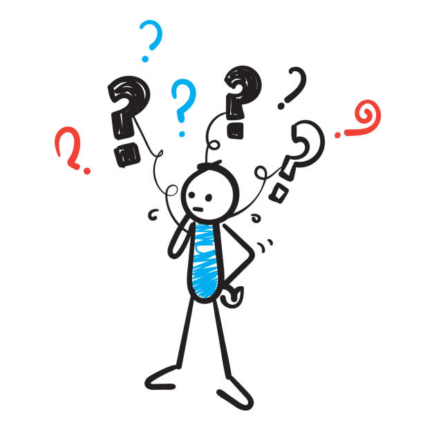

Welcome to the HTML JavaScript Riddles Page
- A girl fell from a 20 foot ladder, she wasn't hurt, how?
She fell off the bottom step!
- You're in a race and pass the person in Second, what place are you in?
Second place!
- What four letter word can be read forward, backward, or upside down and can still be read from left to right?
N-O-O-N!
- What is at the end of the rainbow?
The letter W!
- Two people were playing chess and both won, how is this possible?
They were playing two seperate games!
- What invention lets you look through a wall?
A window!
- What two words added together contain the most letters?
Post Office!
- I have 13 hearts but no arms and no stomach, what am I?
A deck of cards!
- I'm easy to lift but hard to throw what am I?
A feather!
- What color is the wind?
Blew!
Thank you for Playing!
